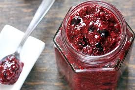
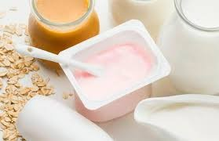
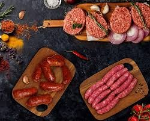

Este taller presenta una alternativa de productos conservados mediante procesos típicos de transformación, en los cuales se utilizará un lenguaje sencillo para que todo público tenga acceso a estas tecnologías.
A partir de diversas sesiones teórico - prácticas, presentadas en el cronograma de actividades en las que se mostrarán los antecedentes de salud y nutrición, aspectos técnicos y de procesamiento, y su aplicación para el autocuidado.
Ingredientes:
2 tazas de fruta natural (fresa, mango, frambuesa, etc.)
2–3 cucharadas de semillas de chía
1–2 cucharadas de jugo de limón
Endulzante opcional: stevia o monk fruit (opcional)
Como se prepara
1. Cocer la fruta a fuego medio en una olla durante 5–10 minutos hasta que se ablande.
2. Machacar la fruta con un tenedor o licuar ligeramente (según la textura deseada).
3. Agregar el jugo de limón y mezclar.
4. Añadir la chía y mover bien.
5. Dejar reposar 10–15 minutos fuera del fuego para que espese de forma natural.
6. Guardar en frasco y refrigerar.
Dura de 5 a 7 días.

Ingredientes:
* 1 litro de leche (de vaca o vegetal enriquecida)
* 2 cucharadas de yogur natural sin azúcar (con cultivos vivos)
* Fruta natural para sabor (opcional)
Como se prepara?
1. Calentar la leche a unos 40–45 °C (tibia, no caliente).
2. Añadir el yogur y mezclar suavemente.
3. Fermentar: colocar la mezcla en un frasco, tapar y dejar reposar 8–12 horas en un lugar cálido.
→ Entre más tiempo, más espeso y ácido queda.
4. Refrigerar 4 horas para estabilizar la fermentación.
5. Para hacerlo tipo bebida, mezclar con un poco más de leche o agua para darle fluidez.
6. Agregar fruta licuada si se desea sabor natural.

Ingredientes
500 g de carne magra (pollo, pavo o cerdo sin grasa)
2–3 cucharadas de chile molido (guajillo, ancho o paprika)
3 dientes de ajo picados
½ cucharadita de comino
½ cucharadita de orégano
¼ taza de vinagre o jugo de naranja agria
Sal al gusto
Como se prepara?
1. Picar o moler la carne magra (mientras más magra, menos grasa tendrá).
2. Mezclar los condimentos: chile, ajo, comino, orégano, sal y vinagre.
3. Integrar todo con la carne hasta obtener una pasta homogénea.
4. Reposar en refrigeración 4–12 horas para que tome sabor.
5. Opcional: embutir en tripa natural o usarlo suelto.
6. Cocinar sin aceite para mantener bajo el nivel de grasa.
